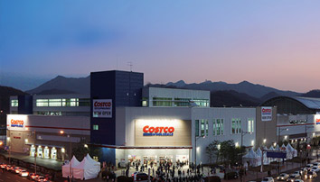
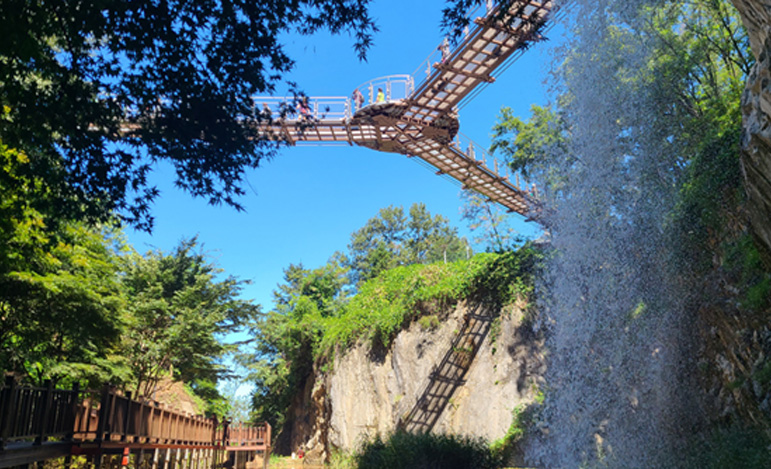
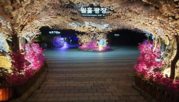
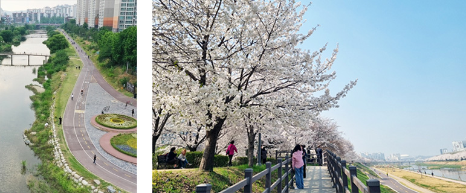

경기도 광명시가 우수한 정주 여건을 바탕으로 살기 좋은 도시로 거듭나고 있다. 이에 따라 최근 광명에 분양하는 신규 아파트들은 완판을 기록함은 물론, 기존 아파트들도 가격 상승률을 이어가는 등 경쟁력을 보이고 있다.
경기도 광명시가 우수한 정주 여건을 바탕으로 살기 좋은 도시로 거듭나고 있다. 이에 따라 최근 광명에 분양하는 신규 아파트들은 완판을 기록함은 물론, 기존 아파트들도 가격 상승률을 이어가는 등 경쟁력을 보이고 있다.
이러한 광명 부동산 시장의 경쟁력에는 서울과 가까운 지리적인 이점도 기여를 하지만, 작은 도시 규모에도 탄탄하게 다(多) 갖춘 인프라도 기여를 했다는 평가를 받는다. 몇몇 인프라는 서울 못지 않게 다양한 만큼 지역 주민들의 만족도를 높이고, 주거 가치 상승에 기여를 하고 있다.
쇼핑? 광명에서 다 할 수 있다!
#광명 #쇼핑 이런 해시태그를 생각하면 뭐가 가장 먼저 떠오르는가?
대부분 사람들은 광명역이 떠오를 것이다. 광명역은 지하철 1호선과 KTX가 통과하는 역으로 전국으로 연결됨은 물론, 통일 이후 유라시아 대륙철도의 시발역을 꿈꾸는 역이다. 광명역은 인근으로다양한 쇼핑 시설이 자리해 교통과 쇼핑, 주거까지 결합된 곳으로 주가를 높이고 있다.

<코스트코 코리아 광명점. 출처 : 코스트코 코리아>
광명역 역세권에 자리한 쇼핑시설에서도 가장 두드러지는 것은 코스트코 코리아 광명점이다. 지난 2012년 처음 문을 열었을 때부터 많은 화제를 끌어 모았으며, 최근에도 광명 지역 사람들뿐만 아니라 인접 지역인 안양, 군포, 의왕, 심지어 서울 등에서도 쇼핑객이 몰려들 정도로 광명 지역을 대표하는 쇼핑시설이다.
이와 함께 광명역 역세권에는 이케아 광명점, 롯데몰 광명점, AK플라자 광명점 등 다양한 쇼핑시설이 자리한다. 다양한 쇼핑시설이 한 곳에 몰려 있기 때문에 필요한 물건을 한 번에 구매할 수 있는 원스톱 쇼핑세권으로 가치가 높게 평가된다. 이 밖에도 광명은 아니지만 바로 접해있는 고척동에는 고척스카이돔구장 및 최근 개점한 코스트코(개봉점), 아이파크몰 등이 있어 주거환경이 더울 편리해지고 있다.

<광명 도덕산 출렁다리. 출처 : 광명시청 홈페이지>
놀거리가 없다고? 광명에서 다 즐겨봐!
광명하면 보통 놀거리가 부족하다는 인식이 강하다. 하지만, 그건 광명을 과소평가한 것이다. 광명은 크고 작은 놀거리부터 가까운 공원에서 즐길 수 있는 산책, 운동 시설 등 다양한 놀거리가 가득한 도시다.
가장 대표되는 곳은 바로 광명동굴이다. 광명 가학동 일원에 자리한 광명동굴은 1912년 일제가 자원수탈을 목적으로 개발한 동굴로 황금을 비롯해 은, 동, 아연 등을 채광할 수 있는 산업 유산이다.

<광명동굴. 출처 : 광명동굴 홈페이지>
광명동굴은 1972년 폐광된 이후 40년 간 새우젓 창고로 쓰이다가 2011년 광명시가 매입하면서 역사와 문화 관광명소로 새롭게 태어났다. 총 깊이가 275m에 달할 정도로 도심에서는
보기 힘든 동굴로 화제를 모으면서 연간 100만명이 찾는 관광지로 거듭났다. 동굴 내에는 VR체험, 공포체험관, 타임캡슐, 공룡체험전, 미니 아쿠아리움, 인생샷 포토 스팟 등 볼거리 다양해 어린이들은 물론 어른들도 보고 즐길 수 있는 광명을 대표하는 관광지다.
땅 속에서 시원한 공기를 느꼈다면 높은 곳에서 아찔함을 경험해 보는 건 어떤가? 광명을 대표하는 산(山) 도덕산에서는 가볍게 트레킹도 즐기고, 출렁다리에 올라 아찔함도 느껴볼 수 있다. 도덕산은 해발 200m의 높지 않은 산이기 때문에 가족 단위로 가볍게 등산도 하고 김밥도 먹고 나들이를 할 수 있는 곳이다. 광명에는 도덕산을 포함해 광명의 4산(도덕산·구름산·가학산·서독산)이 있는데 각 산들이 높이가 높지 않고, 연계가 잘 되어 있어 가볍게 트레킹을 즐기기에 제격이다.
이번에는 짜릿한 스피드를 느껴볼까? 광명 스피돔 경륜장에서는 매주 금, 토, 일요일에 경륜 경기가 열린다. 최근 넷플릭스 예능 ‘피지컬 100’에 출연한 정해민 선수도 출전하는 만큼 그의 활약을 지켜보는 것도 하나의 관람 포인트다. 가볍게 경륜 경기를 관람한 후에는 스피돔 주변에서 자전거를 타거나 인라인 스케이트를 타고 피크닉도 즐길 수도 있다. 주차장도 널찍하고 광장도 넓기 때문에 가족 단위로 찾아가서 여가 시간을 보내기 딱인 곳이다!
집 앞 안양천에서도 놀아볼까?
차를 타고 조금 나갔다면 이번에는 집 앞 공원에서 휴식을 즐겨보자. 광명을 대표하는 공원은 바로 안양천 산책로에서 말이다.
안양천은 광명시의 오른쪽 경계를 따라 흐르기 때문에 광명 시민들이 대부분 이용할 수 있는 광명을 대표하는 공원이자, 산책로다. 안양천에서는 가볍게 걷기와 러닝을 할 수 있고 자전거를 타면서 시원한 바람을 쐴 수 있다. 안양천 공원 내에 자리한 농구장, 풋살장 등에서 스포츠를 즐기면서 상쾌하게 땀을 흘릴 수도 있다.
또한, 봄이면 벚꽃이 흐드러지게 피는 벚꽃길도 펼쳐지고, 여름에는 어린이들이 놀 수 있는 물놀이장도 갖춰지는 만큼 광명 시민의 숨통을 트여주는 하천이라고 해도 과언이 아니다. 운동을 좋아한다면 한강까지 이어지는 안양천, 목감천 자전거도로를 따라 달려보는 것도 추천하는 코스이다.

<안양천 벚꽃길. 출처 : 광명시 공식 블로그>
작지만 다(多) 있는 광명에서 살자
광명은 규모가 크지 않은 도시이지만 볼거리와 놀거리가 다양한 곳이다. 최근 오래된 주택과 아파트의 재개발, 재건축이 이루어지고 있는 만큼 기존의 도시 인프라와 어우러져 더욱 살기
좋은 도시로 거듭나고 있다. 특히, 서울과 경계를 맞대고 있는 광명동 일원에서 주택 재개발이 계속되는 만큼 광명의 주거 가치는 더욱 상승할 것으로 기대를 모으고 있다.